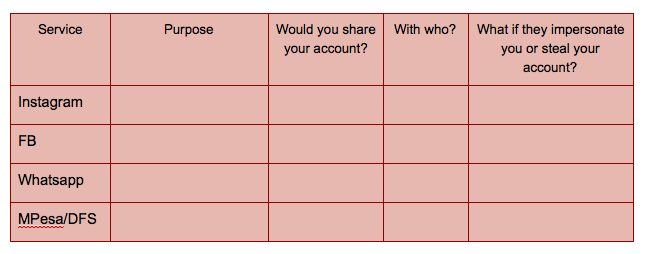

Digital Skills Observatory | Intervention Two: All About Accounts
CC-BY-SA by Mozilla and Digital Skills Observatory
2.5 hours
Learn the how to set up new accounts and create passwords that keep them safe and secure from people who want to impersonate you or steal your data.
Read and Participate on the Web
21st Century Skills
Communication Creativity Problem-solvingWeb Literacy Skills
Connect Evaluate Protect SynthesizeLearning Objectives
- Explain how accounts work.
- Explain why accounts matter.
- Explain basic password security.
- Explain why strong password security matters.
- Explain how apps and information can travel to a phone from the internet, from other phones, and from external memory cards (like SD cards).
- Optional: Explain how wifi works.
- Optional: Connect to a wifi network.
Audience
- 13+
- Beginner web users
- Beginner smartphone users
Materials
- Paper
- Pencils, pens, markers, or crayons
- A bag, bowl, bucket, cup, or hat for the password activity
- GSMA mobile phone curriculum
-
Preparation
Be sure to sercure a place to hold your workshop that can comfortably host the number of attendees you expect.
Adapt any of the activities you think you should change to make them more relevant to your local audience.

Gather the materials you need for the workshop.
Read through the activities in this learning plan and try its activities yourself. Make note of any questions you have and work with the Mozilla Learning community to help answer them.
Visit the Web Literacy Map and familiarize yourself with the Connect, Evaluate, protect, and Synthesize skills. You can print this poster-sized copy of the map to display during your workshop.
-->Review these notes for running a spectrogram. A spectrogram is a discussion activity. The facilitator reads a statement. Participants then group themselves according to whether or not they agree with the statement.
Here are the steps you should follow as a facilitator when you run a spectrogram:
- Welcome everyone and explain that you are about to start with a short introductory activity.
- Ask everyone to stand up and clear space in the room so they can move around without bumping into any obstacles.
- Place post-its with the numbers one to ten written on them in a line on the floor or wall. Leave enough space for people to separate along the line.
- Explain the activity to the participants: You will read a statement and if they completely agree with that statement, they should stand near the number 10. If they completely disagree, they should stand near the number 1. Those who somewhat agree would stand at number 5. Tell the participants that they can change their minds based on what other participants say. Facilitators should demonstrate this so participants know it’s okay to move during the spectrogram.
-
Introduction
10 minutesPair & Share Icebreaker

Directions:
- Ask participants to choose a partner close by and give them a couple minutes to introduce themselves to one another.
- Have each pair take turns explaining one thing they’ve done with their smartphone since the last intervention without speaking, drawing, or writing (singing is allowed). While one person is acting, the other tries to guess what they mean. Participants can use these icons [link to big, printable icons] to assist with referencing specific apps or phone functionality (e.g. WiFi or WhatsApp).
- Act out examples like,
“Used WhatsApp to talk with my grandmother about her fig tree.”
“Got a really weird app from my friend over Flash Share that broke my phone.” - Ask two people to share their pantomime with the whole group so that everyone can try to guess what they did.
-
Explaining Accounts
20 minutesDirections: Deliver this script and then help participants through 1:1 extension activity. You should adapt the explanations to make them clear and relevant for your audience.
Say: An account is like a story about you online; companies and people can look at how you act on different apps, services, and websites.

Sometimes you can even sign-up for a new account using info from an old one.
Spectrogram prompt: People should behave the same way online and offline.
Say: People often behave in particular ways within specific settings. Many may behave the same. E.g. Some people are more extroverted online than they are offline. Some people choose to be themselves online, but under fake names. Do you think people should present standard behaviour online and offline?
Spectrogram prompt: Only your close friends on social media can see what you do online.
Explain: Your accounts let people know who you are and what you do online. Companies track what you do to learn about you so they can try to sell you things you might want, such as loans based on the strength of your social networks. Other people look up your accounts to learn about you as a person. If you decide to have several accounts online, you should know that people will learn about you from them, but you can control what they learn by behaving the way you want to be seen online.
Say: Accounts let you take part in services/activities/games/etc. online.

Accounts let you use a variety of apps and services.
Spectrogram prompt: Everyone should have a lot of accounts online.
Explain: When you login to an app or service, it’s like you walk through a door into that space online. If you do not know how to make accounts or how to use them, it’s as if you always stay at home online and have to wait for friends to bring you news or goods. Making accounts is a way to say, “I am here.”
Say:Accounts let people get to know who you are online.
Spectrogram prompt: All accounts I create should accurately resemble my offline identity.
Explain: While you never want to use a single password for every app or service, it’s okay to have a username or login id that stays the same. By using the same username across apps and services, and by behaving the same way in each place, you can build your online identify and establish trust with other users and, sometimes, even the makers of apps and services. Using the same username (but with a different password for each app or service) is like visiting several homes or vendors where you live and getting to know them while they get to know you.
Say: The web is bigger with different accounts on several apps or services from different companies and organizations.
Spectrogram prompt: I can rely on one service to give me all the news I need.
Explain: If you make accounts on several apps or services from different companies and organizations, you can discover more of the web and internet. Creating a new account for a new app or service is like visiting a new store, town, workplace, or cool place to hang out. It is true, though, that some companies like Facebook let you use one account from that app to login into other apps connected to Facebook. This is okay, but you should know that you are visiting apps and services influenced by Facebook, which is not the whole internet. There are many other apps, services, and sites to visit! Depending on one account, app, or service like Facebook is like visiting a market (like Nakumatt) where one person owns everything and the vendors are their employees. You think you are shopping from a variety of people, but you are not.
Say: You can share information about yourself with your accounts, but you might not want to share your accounts.
Spectrogram prompt: The information you use to create your account is private.
Explain: Some accounts like Facebook and Instagram let you share your thoughts and pictures. Being social online is a big part of the internet. However, you should not share those accounts with others if you are worried about how you appear online. You can never control another person, so if you give someone your password to an account, you should know they can pretend to be you and do things online you would never do. Imagine if someone went to a town or market and said they were you and then behaved very badly. How would that impact how people see you in your day-to-day life?
Say: Making new accounts can seem difficult or like extra work, but knowing how to make accounts is important because it lets you control how people see you online and how you use your phone and the internet to make things better for you.
Spectrogram prompt: It’s important to organize the different accounts you have online.
Explain: You can practice learning how to make accounts by deciding on a username and then deciding on different ways to make passwords. You should come up with ways to make passwords that you can remember, but that are difficult for others to figure out. Many apps and services ask for passwords that have a mix of uppercase and lowercase letters, numbers, and punctuation marks. You should avoid passwords that are common words, things people might already know about you (like your birthday), and things that are too easy to guess (like 12345 or 54321). Managing your accounts is like making sure everything you might take with you in a bag or in your pockets is safe, secure, and ready for you to use. Remember that if someone gets into your account, they can also change your password and lock you out if it!
1:1 Extension
Take 10 minutes to help attendees
- Decide on a username they might use across accounts.
- Set up a new account on a popular service.
- Find and use their account settings on that app or service to change their username or password if they need to.
This time can also be used for Q&A about accounts.
-
Why Do Passwords Matter to Much?
30 minutesPassword Guessing Game
Materials:
- 5 pieces of paper or cards per person (the name or logo from a different app or service should be on each card)
- Markers or pens
- A bag, bowl, bucket, cup, or hat for mixing up the papers
Directions: Introduce and explain this game to help participants understand why a single password makes their accounts unsafe. Then facilitate the discussion below.
- Give each participant's get five small pieces of paper. Each paper should have the name or logo of a popular app or service.
- Invite participants to make up a password for each app or service and to write it on the back of the card. Be sure to help anyone who needs it. Make sure you tell participants to make up passwords, not to use their own real ones.
- Collect the cards and jumble them in some kind of a container.
- Ask participants to take turns picking a random card, reading the password to the group, and leading a discussion to figure out who wrote that password.
- Play until several passwords have been correctly guessed. Then move on to facilitate a discussion about password security as described below.
As you play, it should become clear that passwords made up of personal information (like names or dates) and repeated passwords make it easy to guess to whom those passwords belong. Explain that the reverse is also true - impostors can easily break passwords made up short passwords made up of sequential numbers (like 1234) and they can guess passwords that are made of simple words, as well (like “mydata”). Impostors can use what they know about you to guess passwords based on important dates in your life (such as birthdays or anniversaries) or the names of people (including celebrities and sports teams) or places you know.

Avoid weak passwords to prevent impostors from stealing your accounts.
Ask participants to suggest other ways to create stronger passwords that aren’t so easily guessable by impostors who want to steal their accounts, data, and money. If they are unsure, suggest creating individual passwords for each app or service they use with
- At least 8 characters.
- A mix of uppercase and lowercase letters.
- A mix of letters, numbers, and punctuation marks.
- Try creating an alphanumeric phrase from a memorable sentence (e.g. "I won my first spelling bee at age 7,” might become “Iwm#1sbaa7”). Random strings of common words, such as “Mousetrap Sandwich Hospital Anecdote,” tend to work well, too.

You can create strong passwords phrases that matter to you.

You can also make passwords from seemingly silly, but memorable phrases.
Ask participants to reflect and explain why having the same password on multiple apps or services make it easier for impostors to break into their accounts.
Here are other ways to think about these problems:
Imagine you are coaching a soccer team. You always use the same formation of players with six strikers and five midfielders. You have no defense and no goalie. Every team knows how to beat you, but you do not change your formation. This is like having a weak password any impostor can guess or figure out using hacking technology to “win” control of your accounts.
Imagine you are playing keram, but your opponent only needs to make one shot to win the game. That one magical shot will put all of his men and the queen in the hole all at once. When you reuse one password too often, it’s like giving an impostor a magical shot to steal all of your accounts at once (or make their “magical shot”) with that one password.
Imagine you are playing soccer. You are winning by ten goals, but your opponent only needs to make one goal to get ten points and tie the game. This is like when you have ten accounts, but only one password that you reuse. If an impostor can get your single password (or make their “goal”) then they get to steal all ten of your accounts all at once.
Imagine that you are the creator of the game called Temple Run. You made ten levels in the game. However, a player can do the same thing in each level to win the game. All they have to do is run in a straight line. That is like setting up ten accounts with just one password you reuse. An impostor can “beat” you at your password “game” by stealing the same password and using it again and again for all ten accounts (your different “levels”).
Discussion
Next, ask participants to consider the risks of impostors taking over their accounts on popular apps and services. Use an organizer like this one to frame the conversation:
You can also ask something like, “What if someone impersonated you on an account? Would that ever be okay?”
-
How Does My Phone Get Apps and Store Information?
30 minutesDirections: Lead the mapping activity, read through script below, and then help with 1:1 extension time.
The Three Paths Mapping Activity
Directions: Work through the mapping activity and then read the script and facilitate the 1:1 extension activity below. You should adapt the script to make it relevant and real for your audience.
Materials:
- Paper
- Pencils, pens, markers, or crayons
- Ask participants to grab paper and pencils, pens, markers, or crayons.
- Ask participants to pick a color or shape to represent your learning space and to mark it in the middle of the map. Be sure to tell everyone that these maps can be funny and rough - they are for thinking, not for being perfect drawings.
- Next, ask participants to draw three different ways to get to the venue. These could be real ways - they could map different roads, for example. These could also be fantastic ways to get to the workshop, such as flying in or traveling on roads with loop-de-loops. Give them about five minutes.
- Invite participants to share their maps with a neighbor and to explain the different ways to getting to class. Allow about 5 minutes for sharing.
After everyone has shared a map with a partner, bring the group back together and share the following information with them:
Say: Just like there are many ways to get to class, there are many ways information gets to and from your phone.

There are many ways for your phone to send and receive information.
Explain: Your phone doesn’t get and store apps and pictures in just one way. There are different paths information can take to get to your phone. Some of those paths are easy to travel and are like wide roads. Information moves quickly on them. Some of those paths are narrow and crowded, and information moves more slowly through them.
Say: One way your phone gets an app or data is from your cellular network and the internet.
Explain: When you download an app from an online store or company, that app comes to you from the internet and your cellular network - the network your phone is connected to. Your phone has an antenna inside it that connects to cellular towers. Those towers connect to other phones, but also to the internet. If you have an advanced phone and a deal for a lot of fast data, an app might travel very quickly to your phone from the internet and your cellular network. If you have a basic phone and data plan, it might take a few minutes or more for an app to download. The app is always the same size so it will use up the same amount of data, but having a faster phone or data plan can speed up the process. The cellular network is like a road that is almost always connecting you and your phone company and the internet.
Say: Another way your phone can get an app or data is from a phone-to-phone transfer.
Explain: Phones can talk with one another on the cellular network. You can talk to someone or send a text message on that network. You can also use a wifi network - a different kind of network your phone can connect to sometimes - to send another person an email or message they can see on their phone with the right app. You can also use another kind of connection to send information between phones called Bluetooth that works between phones that are very close together. If you send information on the cellular network, it will consume your data. If you send information by wifi or Bluetooth, it usually will not consume your data. We will look for wifi and Bluetooth on your phone in just a little bit. They are like different vehicles people ride on the phone-to-phone road.
Say: Phones can sometime stake external memory cards, often called SD cards, that have information saved on them already.
Explain: Your phone has something called internal memory where it stores most of your apps and the things you create with your phone, like photos. However, many phones can also hold and read external memory cards, like SD cards. You can save almost anything you want on an SD card so long as it doesn’t run out of room - it has a data limit. You can find apps to help you store information from your phone to an SD card if your phone can use those cards. Then you can take that card out of your phone, give that card to someone else, and show them how to use an app that reads the card to get files from it like apps or photos. This is like one person traveling the road from the internet to deliver a physical package full of information to someone who lives well off that road.
1:1 Extension
Take 10-15 minutes to help participants find the wifi and Bluetooth settings and apps on their phone, and, if possible, experiment with sending messages or information with them.
You can also use this as a Q&A time about sharing apps and information or as a time to practice sharing information through apps like Flashare or with SD cards.
-
Optional: Wi-Fi Fieldtrip
30 minutesDirections: Help participants learn how wifi works at a local hotspot.
If time permits - and you know of a nearby local hotspot that has free wifi or wifi that this project can pay for - take your participants there on a walk. Before you go, show them how to search for wifi and how to connect their phone to it. Also explain that
- Wifi lets you connect to the internet and use data without consuming data from your cellular data plan.
- Wifi is local, and wifi connections stay in one spot. You cannot connect to this wifi spot if you leave, but you can come back to this spot to connect again.
- Wifi spots can be anywhere people set them up, and you can find them by using the wifi setting on your phone.
- You need to pay attention to your phone’s wifi settings and the icon it uses to show you a connection. If that icon disappears, you are back on your cellular network consuming data again.

Wi-Fi is sometimes offered for free and lets you connect to the internet without spending your own data.
Once you get to your local wifi hotspot, help people troubleshoot their connections 1:1. Try to have each person get connected and use an app or send a message using wifi.
To look for a local hotspot, go to your settings and tap Wi-Fi to see a list of nearby networks.

You can find avaialble Wi-Fi networks under Settings.
To select a network, tap its name.

Your smartphone will connect the network you choose, if able.
Some networks require you to login the same way you would for an account.

Wi-Fi networks sometimes require you to login; you can ask a Wi-Fi hotspot's owner for that information.
Head back to your classroom with enough time to get there before the end of the intervention.